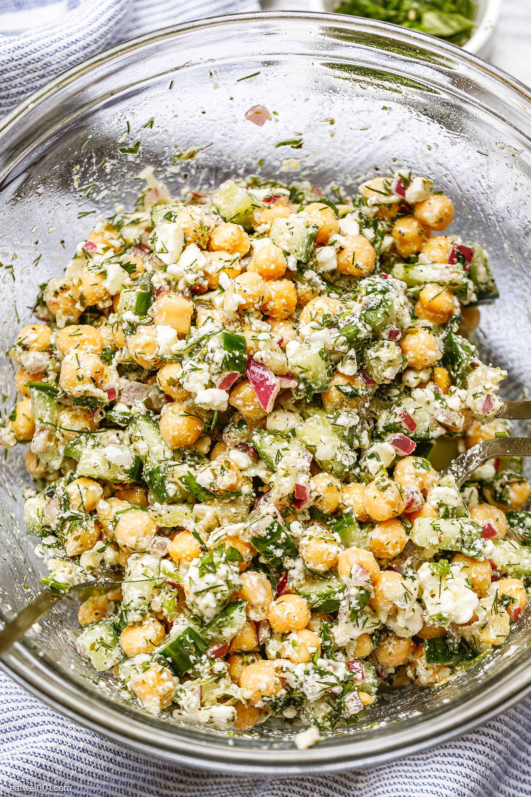

Chickpea Feta Salad

Photo credit: eatwell101.com
Description
Fresh, scoopable chickpea salad with flavours of cucumber and red onion. The bright flavour of fresh parsley complements the tangy feta and tart lemon.
This fibre-filled salad is complemented by a protein boost of hemp hearts. The light dressing of lemon, honey, and olive oil allow the flavour os the fresh ingredients to shine.
Ingredients
- 2 cans chickpeas, drained and rinsed
- 1 red onion, diced
- 1 cucumber, seeded and diced
- 1 green bell pepper, seeded and diced
- 1/2 cup hemp hearts
- 1 small tub feta cheese, crumbled
- 1/2 cup fresh parsley, chopped
- 1 lemon, zested and juiced (separated)
- 3 T olive oil
- 1 T honey or maple syrup
- 1/2 tsp dijon mustard
- Salt and pepper to taste
Steps
- In a large mixing bowl add chickpeas, red onion, cucumber, bell pepper, hemp hearts, crumbled feta, and lemon zest.
- Toss ingredients until evenly mixed.
- To make dressing, add lemon juice, olive oil, honey, dijon, and salt and pepper to a mason jar with lid.
- Shake well to combine ingredients.
- Pour over salad mixture, toss to coat.
- Refrigerate several hours to allow flavours to develop.
- Serve as-is, or with tortilla chips for scooping.
Home